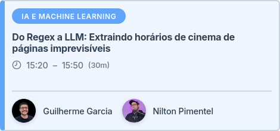
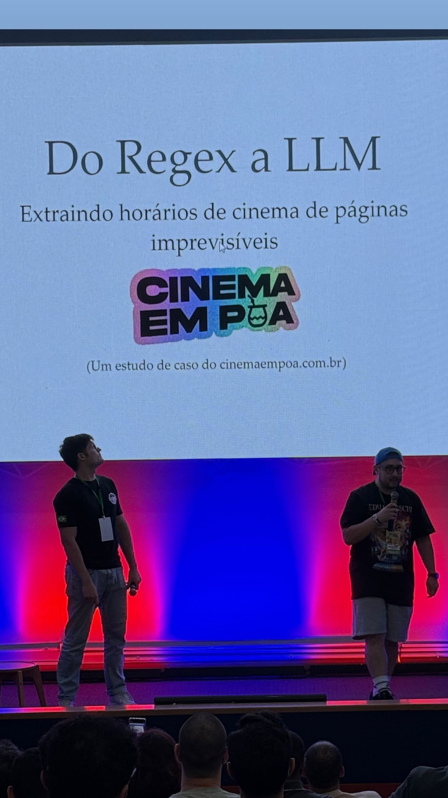
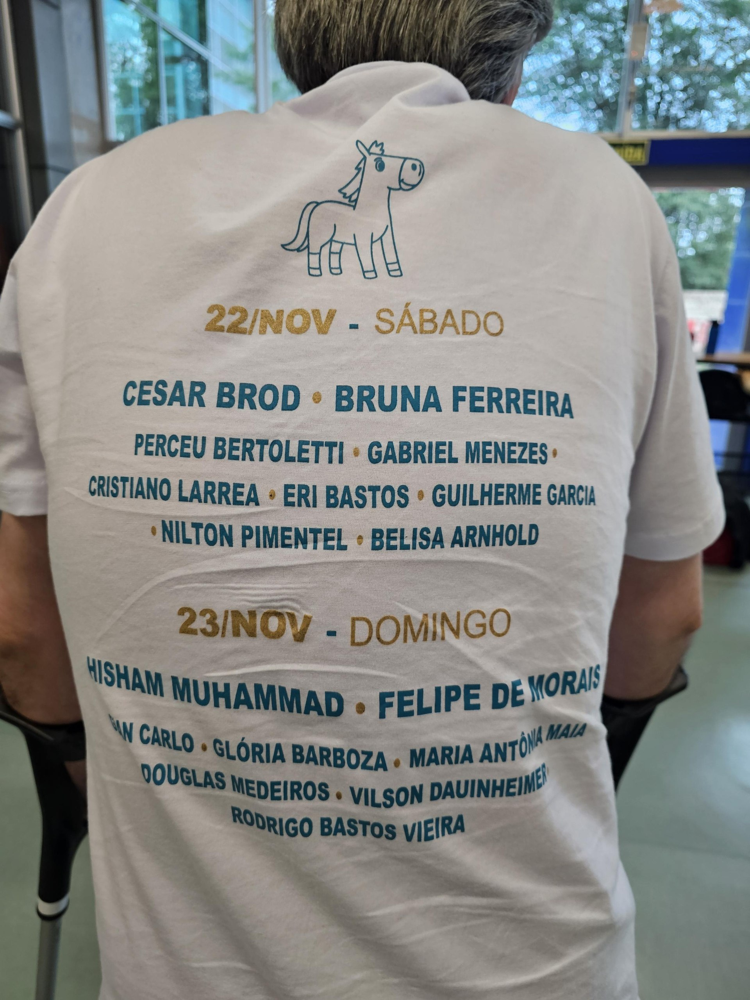

cinemaempoa na pythonsul
Em 21 a 23 de Novembro de 2025 aconteceu o Python Sul 2025 em Porto Alegre.
Junto com o Nilton Pimentel, submeti uma palestra baseada na implementação do cinemaempoa pra fazer extração dos horários de filmes que passam no CineBancários.

A ideia foi usar duas LLMs diferentes pra processar as postagens do blog do cinema e retornar as exibições de filmes em forma estruturada (JSON).
O diferencial foi usar a comparação entre o resultado dos dois modelos pra criação de alertas: discordâncias entre os modelos são uma ótima métrica pra detectar erros de extração!
Daí nesses casos, entra um ser humano no fluxo pra realizar a correção.
A implementação deu super certo, e fizemos uma apresentação baseada na experiência.

Eu subi os slides aqui no site pra registro: https://guilhermegarcia.dev/slides/cinemaempoa-pysul-2025/, e o repositório com a implementação original está aqui: https://github.com/guites/cinemaempoa-pythonsul.
Bônus: meu nome saiu na camiseta 🖤🖤

Fica o agradecimento ao pessoal da organização, o evento foi sensacional!